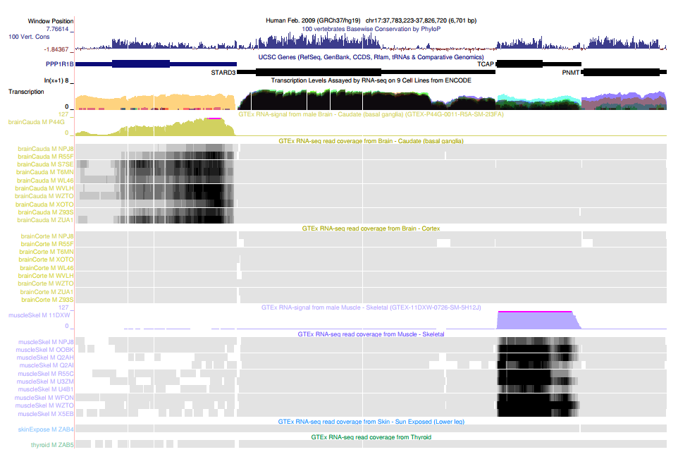

Single-cell sequencing of the blood T cell repertoire
before and after trastuzumab treatment in early-stage HER2+ breast cancer
March 14, 2024
Introduction
Career Timeline
Nanopore Research
Nanopore reread project
A: Substrate bound to the lipid bilayer via a cholesterol tag with a helicase (Hel308) bound and inactive at the other end. B: Electric potential causes the DNA duplex to unwind, leaving behind the cholesterol tether bound to the complement strand. C: Electric potential and the steady-state nature of the G-Quadruplex (GQ) causes it to unfold allowing the helicase to become enzymatically active in the 3’ -> 5’ direction. D: As Hel308 translocates the DNA back up through the pore, the GQ will refold allowing an additional enzyme to become bound. E: Continued translocation. F: More than 3-4 abasic residues causes Hel308 to dissociate from the substrate (9 are used in the substrate). The DNA strand is then pulled back down and the cycle is able to repeat itself once more.
Computational Genomics Lab
Data Access: GTEx and UCSC Genome Browser

Data Access: GTEx and UCSC Genome Browser
Research Data Collaborations
Atreca Inc.
Novel Antibody Target Discovery Platform
Teiko Bio
Next Steps?
Analysis of T-cell sub-populations in HER2+ breast cancer
Study Background
HER2+ Breast Cancer
- HER2-positive breast cancer accounts for approximately 20% of breast cancer cases and is characterized by the overexpression of the human epidermal growth factor receptor 2 (HER2) gene 1
- Anti-HER2 treatments, such as trastuzumab, have drastically the management of HER2-positive breast cancer, turning a once difficult-to-treat cancer into one with much more favorable outcomes 2
Tumor-Infiltrating Lymphocytes
- Anti-tumor immunity plays a role in the efficacy of anti-HER2 treatment, as demonstrated by the association of TILs with prognosis and increased efficacy from treatment with trastuzumab and chemotherapy in HER2+ breast cancer 3
- Immunohistochemistry and RNA sequencing of breast tumor tissues has suggested that trastuzumab may recruit and activate anti-tumor T cells 4
Study Design
Study Design
Patient Cohort and Treatment Regimen
- Study Group: Analysis involved paired pre-treatment and on-treatment PBMC samples from five patients with HER2+ breast cancer, staged IIA–IV (IIA [n=2], IIIC [n=2], IV [n=1])
- Treatment Protocol: Patients received preoperative therapy comprising docetaxel, carboplatin, trastuzumab, and pertuzumab
Study Design
Sampling and Analytical Methods
- Sample Collection: Blood samples were collected at the start of Cycle 1, Day 1 (C1D1) for pre-treatment baseline and on Day 1 of Cycle 3, 4, or 5 (C3, C4, C5) to monitor treatment response
- Cellular Profiling: Peripheral CD3+ T cells from these samples were subjected to detailed profiling, utilizing 10x Genomics VDJ alongside gene expression single-cell sequencing to elucidate the immune landscape and gene expression alterations induced by the treatment
VDJ Pipeline
The cellranger vdj pipeline can be used to analyze sequencing data produced from Chromium Next GEM Single Cell 5’ V(D)J libraries. It takes FASTQ files for V(D)J libraries and performs sequence assembly and paired clonotype calling. The pipeline uses the Chromium Cell Barcodes (also called 10x Barcodes) and UMIs to assemble V(D)J transcripts per cell.
Cite-Seq
Single-Cell Data
- Cellular Data Depth: High-quality data with over 6,500 cells profiled per sample
- Gene Expression: Approximately 41 million reads per sample, ensuring robust gene expression profiling. TCR Analysis: Achieved ~100,000 Unique Molecular Identifiers (UMIs) per sample for precise T-cell receptor (TCR) sequencing
- CITE-Seq: CITE-seq marker panel was included and used in conjunction with gene expression QC to filter the dataset and improve downstream analysis
Computational Methods

AnnData schema for storing annotated data. The core data structure used by scanpy which was used for this analysis.Data Processing
- Filter Cells - Remove cells with high mitochondrial content and too few genes detected
- Filter Genes - Remove genes below minimum cell and variance threshold
- Normalization - Regress out effects by total count and scale each gene to unit variance
Batch Correction and Dimensionality Reduction

Harmony operates in embedding space and produces a corrected PCA embedding which is used downstream to calculate the neighborhood graph which in turn is used by UMAP for further dimnsionality reduction.
Clustering and Annotation
CD8+ and CD4+ T-cell subsets
- Eleven T cell subsets were characterized based on transcriptional profiles from the peripheral blood of donors
- Undefined (grey) represents a collection of cells that did not confidently correspond to signatures of collected T cell subsets
Patient-level Analysis
Large T cell clonal expansions were observed in pre- and on-treatment peripheral blood samples from two patients who exhibited a pathological complete response. A high abundance of activated CD8+ TEM/EM cells was seen in patients 1 and 5 (red arrows). The other three patients had partial clinical responses with residual disease at surgery. Patient 4 had an increase in activated CD4+ Tregs on-treatment (red circle)
Variation in T-Cell Populations Across Treatment Stages
- Clonal expansions were observed in activated CD8+ TEM/EM cells in patients 1 and 5
- Clonal expansion of activated CD4+ TEM/EM cells was observed in patient 5
- No significant expansions were observed in the other subsets
Variation in T-Cell Populations Across Treatment Stages
A possible trend toward on-treatment increase in activated CD4+ Tregs was observed. Activated CD4+ Treg subset sizes are small and therefore estimation of abundance has high error bars.
Summary
- Single-cell mRNA sequencing enables high-resolution characterization of immune cell subsets and represents a promising approach to assess the immune response to anti-HER2 treatment and other cancer therapeutics
- In this study, single-cell mRNA sequencing of peripheral CD3+ T-cells identified clonal expansions in activated CD8+ and CD4+ T cells in HER2+ breast cancer patients who had a pathological complete response with preoperative docetaxel, carboplatin, trastuzumab, and pertuzumab treatment
- These data are consistent with the model that T-cells play a key role in anti-HER2-mediated tumor control and warrant further investigation in a larger sample population
- Due to the limited sample size (\(n=5\)), it was challenging to establish statistical correlations between complete pathological responses and the relative proportions of activated CD4/CD8 T-cell populations. Bayesian power analysis can be used to estimate the number of samples we would need to reliably quantify a given effect size.
Open for Questions
Thank you for your time and consideration
Addendum: Bayesian Power Analysis
General Steps
- Define your prior beliefs about the parameters of interest
- Specify the data generating process model. This model should represent the belief of how data arises within an experimental context
- Determine the decision rule defining “significant” or “practically relevant.” A Bayesian approach is to specify a region of practical equivalence (ROPE) around a null value where effects are considered too small to be of interest
- Simulate data of varying sample sizes at differing effect sizes
- Run inference (e.g. MCMC) on each simulated dataset to estimate the posterior distributions
- Calculate power by determining how often the decision rule leads to a conclusion of practical significance by calculating the proportion of simulations where the posterior distribution of the effect size meets your criteria for significance (e.g., falls outside the ROPE).